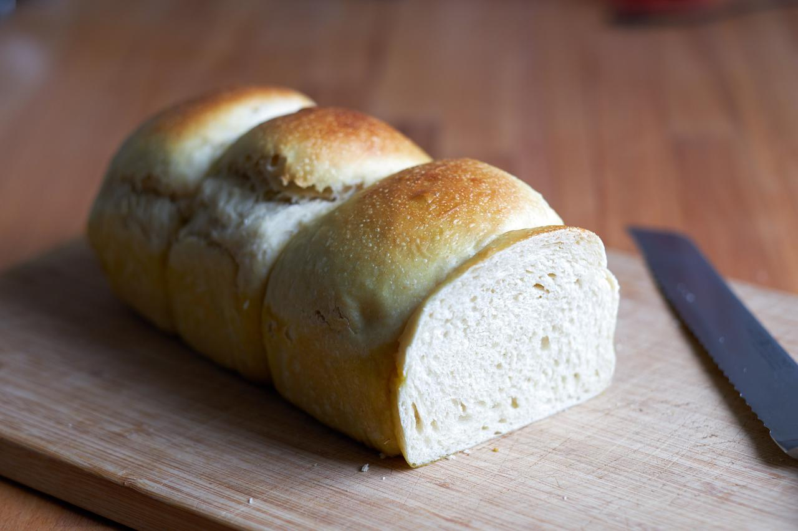

Brioche
Um den klassischen Hefezopf zu backen, benötigt man normalerweise frische Hefe. Ich arbeite gerne mit langer Teigführung und entsprechend wenig Hefe, weshalb ich es nie hinbekomme, einen 43 g Würfel Hefe aufzubrauchen. Daher versuche ich, ausschließlich mit meinem Sauerteig zu backen. Ich denke, es ist es mir gelungen, einen leckeres und lockeres Brioche ganz ohne Hefe zu backen. Man braucht nur etwas Geduld und einen aktiven Sauerteig.

Vorteig
- 100 g Weizenmehl Type 550
- 100 g Hafermilch, warm
- 15 g Sauerteig, aktiv
Kochstück
- 135 g Hafermilch
- 35 g Weizenmehl Type 550
Hauptteig
- Vorteig
- Kochstück
- 80 g Hafermilch, warm
- 40 g Zucker
- 5 g Salz
- 380 g Weizenmehl Type 550
- 40 g Margarine, zimmerwarm
Eistreiche
- 2 EL Sojamilch
- 1/2 TL Ahornsirup
- 1 Pr Kurkuma
- 1 Pr Salz
Vorteig 12 h gehen lassen, Kochstück 12 h im Kühlschrank lagern. Alle Zutaten verkneten. Abgedeckt bei 25-27 Grad 3 h gehen lassen. Einteilen und kurz ruhen lassen. Dann zu strammen Kugeln formen und im Form setzen. Mit Eistreiche einpinseln und aufgehen lassen (30-60 min). Nochmals einpinseln und bei 200-180°C 30 Minuten backen.